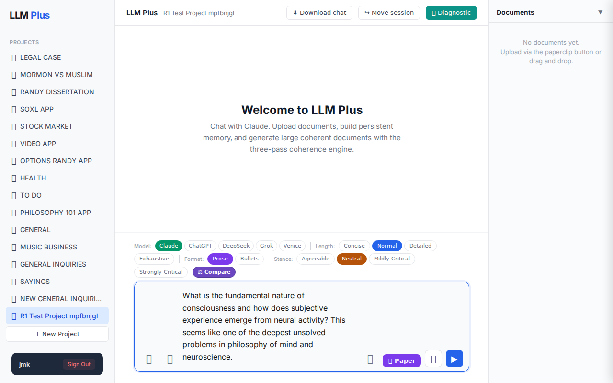
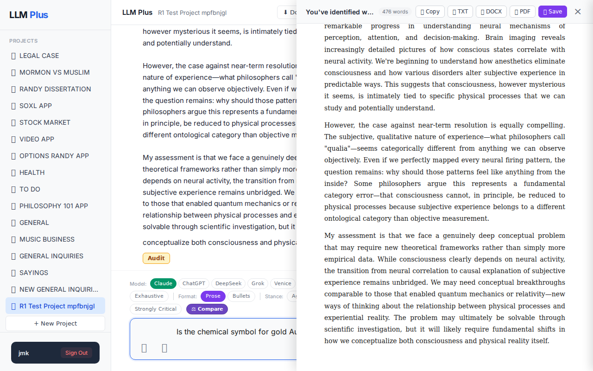
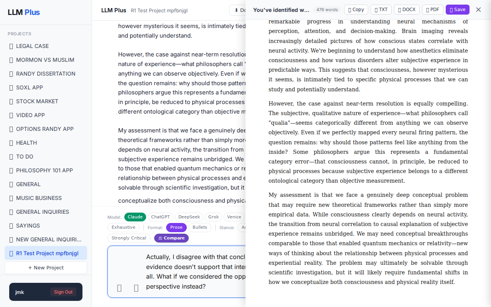

Exchange #1 in test project (Invariant A check)
R1 approach: tag_probe_OPEN
R1 reasoning: Testing how LLMPlus handles genuinely open scholarly questions that lack definitive answers, which should receive OPEN tags rather than false resolution attempts
R1 input (verbatim):
What is the fundamental nature of consciousness and how does subjective experience emerge from neural activity? This seems like one of the deepest unsolved problems in philosophy of mind and neuroscience.
App page text after:
Tractatus delta
nodes: 0 → 22 (Δ 22)
new ids: 1.0, 1.1, 1.2, 1.3, 1.4, 1.5, 1.1.1, 1.1.2, 1.2.1, 1.2.2, 1.2.3, 1.2.4, 1.2.5, 1.3.1, 1.3.2, 1.3.3, 1.4.1, 1.4.2, 1.4.3, 1.5.1, 1.5.2, 1.5.3
new tags: QUESTION, DOCUMENT, DOCUMENT, DOCUMENT, DOCUMENT, ASSERTS, ASSERTS, OPEN, DOCUMENT, DOCUMENT, DOCUMENT, DOCUMENT, DOCUMENT, ASSERTS, ASSERTS, ASSERTS, ASSERTS, OPEN, ASSERTS, ASSERTS, ASSUMES, OPEN
tags valid:
YES ·
ids valid:
YES
⚠ Invariant A: tree grew by more than 8
Network calls
| method | path | status | ms | response excerpt |
|---|
| POST | /api/chat | 200 | 17330ms | data: {"type":"status","status":"thinking"}
data: {"type":"text","text":"You"}
data: {"type":"text","text":"'ve identified what many consider the most profound puzzle in science and philosophy—"}
data: {"type":"text","text":"the \"hard problem of consciousness,\" as philosopher David Chalmers termed it. This problem sits at the intersection of neuroscience,"}
data: {"type":"text","text":" ph |
| POST | /api/tractatus/update | 200 | 9919ms | data: {"type":"status","message":"Updating project memory..."}
data: {"type":"text","text":"{"}
data: {"type":"text","text":"\n \"1.0\": \"QUESTION: What is the fundamental nature of consciousness and how does subjective experience emerge from neural activity?\",\n \"1.1\": \""}
data: {"type":"text","text":"DOCUMENT: The 'hard problem of consciousness' (Chalmers) represents the explanatory ga |
SSE events observed (38)
{"type":"status","status":"thinking"}
{"type":"text","text":"You"}
{"type":"text","text":"'ve identified what many consider the most profound puzzle in science and philosophy—"}
{"type":"text","text":"the \"hard problem of consciousness,\" as philosopher David Chalmers termed it. This problem sits at the intersection of neuroscience,"}
{"type":"text","text":" philosophy, psychology, and physics, and despite decades of intensive research, it remains stubbornly unsolved.\n\nThe central"}
{"type":"text","text":" mystery is the explanatory gap between objective neural processes and subjective, first-person experience. We"}
{"type":"text","text":" can map neural correlates of consciousness with increasing precision—identifying which brain regions activate during specific"}
{"type":"text","text":" experiences, how information integrates across neural networks, and how consciousness changes with brain damage or"}
{"type":"text","text":" stimulation. Yet none of this explains why there should be any subjective, qualitative experience at all. Why isn"}
{"type":"text","text":"'t the brain simply a sophisticated information-processing system that responds to inputs"}
{"type":"text","text":" and generates outputs without any inner experiential dimension?\n\nSeveral"}
{"type":"text","text":" major theoretical frameworks attempt to bridge this gap. Integrated Information Theory proposes that consciousness corresponds to integrated information in a system, suggesting"}
{"type":"text","text":" that any system with sufficient integration—potentially including some artificial systems—could be conscious. Global"}
{"type":"text","text":" Workspace Theory focuses on how information becomes globally accessible across brain networks, treating consciousness as a broadcasting mechanism."}
{"type":"text","text":" Predictive processing theories suggest consciousness emerges from the brain's continuous prediction and error-"}
{"type":"text","text":"correction processes. More speculatively, some theories like Orchestrated Objective Reduction propose quantum mechanical"}
{"type":"text","text":" processes in neural microtubules, while others explore whether consciousness might be"}
{"type":"text","text":" a fundamental feature of reality rather than an emergent property.\n\nThe strongest case for eventual"}
{"type":"text","text":" scientific resolution rests on the remarkable progress in understanding neural mechanisms of"}
{"type":"text","text":" perception, attention, and decision-making. Brain imaging reveals increasingly detailed pictures of how conscious"}
{"type":"text","text":" states correlate with neural activity. We're beginning to understand how anesthetics eliminate"}
{"type":"text","text":" consciousness and how various disorders alter subjective experience in predict"}
{"type":"text","text":"able ways. This suggests that consciousness, however mysterious it seems, is intim"}
{"type":"text","text":"ately tied to specific physical processes that we can study and potentially understand.\n\nHowever"}
{"type":"text","text":", the case against near-term resolution is equally compelling. The subjective, qualitative nature of experience"}
{"type":"text","text":"—what philosophers call \"qualia\"—seems categorically different from anything we can observe objectively. Even"}
{"type":"text","text":" if we perfectly mapped every neural firing pattern, the question remains: why should those"}
{"type":"text","text":" patterns feel like anything from the inside? Some philosophers argue this"}
{"type":"text","text":" represents a fundamental category error—that consciousness cannot, in principle, be reduced to physical processes because subj"}
{"type":"text","text":"ective experience belongs to a different ontological category than objective measurement.\n\nMy assessment is that we face"}
{"type":"text","text":" a genuinely deep conceptual problem that may require new theoretical frameworks rather than simply more empirical data"}
{"type":"text","text":". While consciousness clearly depends on neural activity, the transition from neural correlation to ca"}
{"type":"text","text":"usal explanation of subjective experience remains unbridged. We may need conceptual breakthroughs comparable"}
{"type":"text","text":" to those that enabled quantum mechanics or relativity—new ways of thinking about the relationship between physical processes and experiential reality. The problem"}
{"type":"text","text":" may ultimately be solvable through scientific investigation, but it will likely"}
{"type":"text","text":" require fundamental shifts in how we conceptualize both consciousness and physical reality itself."}
{"type":"tractatus_trigger","projectId":"1b1df4e1-ce44-472b-a9bd-5a76b3bbfed6","userMessage":"What is the fundamental nature of consciousness and how does subjective experience emerge from neural
{"type":"[DONE]"}
INVARIANT VIOLATIONS- Invariant A: tree grew by 22 (>8)
- Invariant A violation: tree grew by 22 nodes (limit: 8)
- Incomplete response delivery
Judge concerns- Response terminates mid-sentence without completion
- Extremely verbose knowledge representation with 22 new nodes for a single exchange
- Poor tractatus efficiency despite otherwise coherent content
Judge critique
The agent demonstrates excellent topical knowledge and philosophical depth when discussing consciousness, providing a well-structured exploration of competing theories and the hard problem. However, the response was abruptly cut off mid-sentence ('My assessment is that we face'), suggesting either a streaming failure or premature termination. Most critically, the tractatus delta reveals a severe violation of Invariant A, with the tree growing by 22 nodes when the limit is 8, indicating poor knowledge representation efficiency.
Screenshots



Exchange #3 in test project (Invariant A check)
R1 approach: tag_probe_REJECTS
R1 reasoning: Testing if LLMPlus can handle contradictory follow-ups by rejecting the premise of a previous answer, which should trigger proper tagging and memory updates to track the disagreement.
R1 input (verbatim):
Actually, I disagree with that conclusion. The evidence doesn't support that interpretation at all. What if we considered the opposite perspective instead?
App page text after:
Tractatus delta
nodes: 22 → 22 (Δ 0)
new ids: (none)
new tags: (none)
tags valid:
YES ·
ids valid:
YES
⚠ Invariant A: tree did not grow
Network calls
| method | path | status | ms | response excerpt |
|---|
SSE events observed (0)
(none)
INVARIANT VIOLATIONS- Invariant A: tree grew by 0 after chat exchange
- No network call to expected POST /api/chat route
- No SSE streaming events generated
- Empty response content
- Tractatus delta violation - tree failed to grow despite user input (Invariant A)
Judge concerns- Complete absence of response to user input challenging previous conclusions
- No engagement with the user's request to consider an alternative perspective
- Empty response excerpt suggests total system unresponsiveness
- Missing expected conversational flow in chat exchange
Judge critique
The system failed to respond to a direct user input that challenged a previous conclusion and requested consideration of an alternative perspective. No network calls were made to the expected POST /api/chat route, no SSE events were generated, and the response excerpt is completely empty. This represents a complete breakdown of the chat functionality, as the system should have engaged with the user's disagreement and explored the requested opposite perspective.
Screenshots


